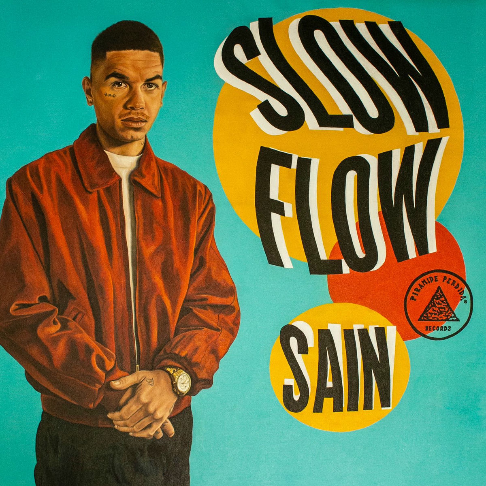

Sain
Rapper e Beatmaker
Popular
Dispiei

Castelos & Ruinas
Poetas no Topo 4
Cartões Postais
Songs for Smoke Pt.2
Peso do Mundo
Discografia

KTT ZOO
Album · 2023

Slow Flow
Album · 2019
Dose de Adrenalina
Album · 2017
Sobre
Sain - Stephan Affini Peixoto - é um talentoso beatmaker e versador de rimas lapidadas. Conhecido como o Mr. Slow Flow do rap nacional, cresceu imerso em arte, sonoridades, shows e estúdios. Nascido no bairro do Catete, no Rio de Janeiro, em 1993, gravou sua primeira música aos 11 anos ao lado de seu pai, Marcelo D2.